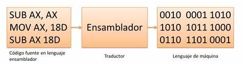
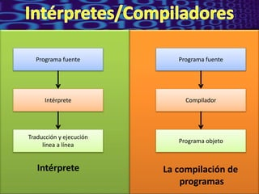
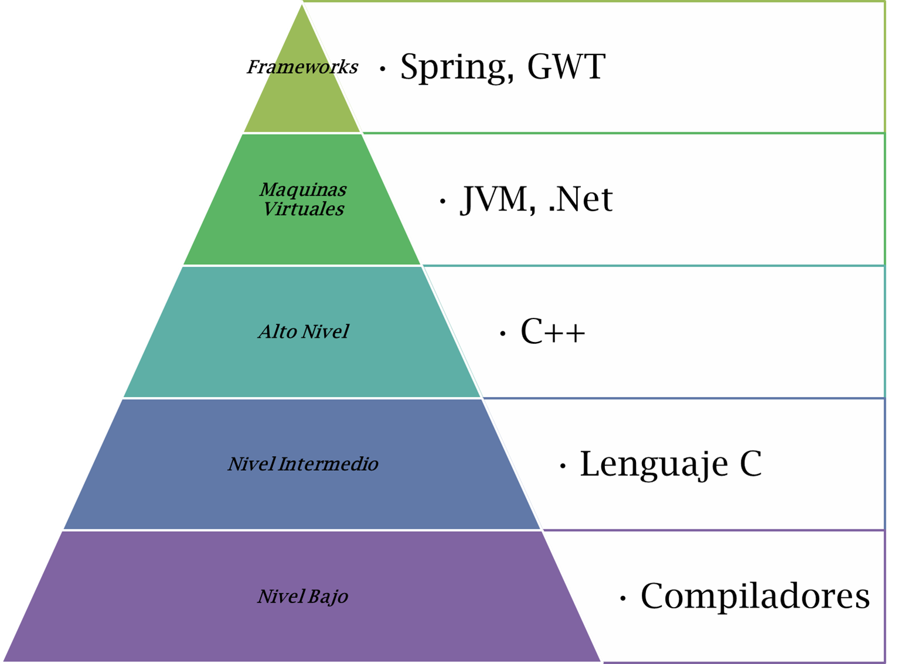

| TRADUCTORES DE BAJO NIVEL |
- Ensambladores:traducen codigo ensamblador a lenguaje maquina
- Ensamblador de una sola pasada: procesan el codigo fuente una sola vez
- Cargadores:Cargan programas en la memoria principal para su ejecucion
|
 |
| TRADUCTORES DE ALTO NIVEL |
- Compiladores: Traducen codigo fuente completo a lenguaje maquina de una vez.
- Interpretes: Ejecutan el codigo fuente linea por linea, traduciendolo y ejecutanto al mismo tiempo.
|
 |
| EJEMPLOS |
- Bajo nivel
- Ensamblador FASM/Cargador MS-DOS
- Alto nivel
- Compilador GCC(C/C++)
|
 |